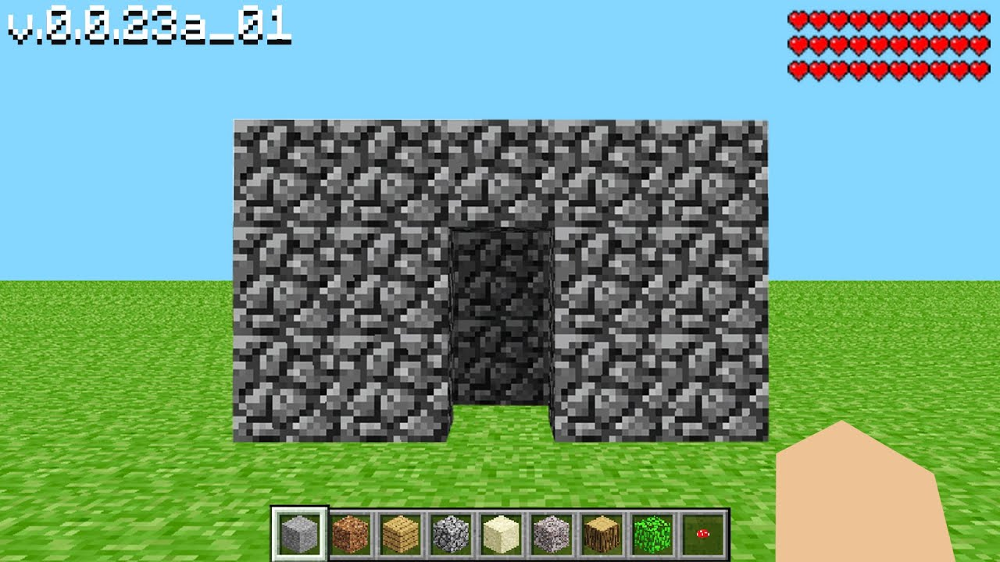
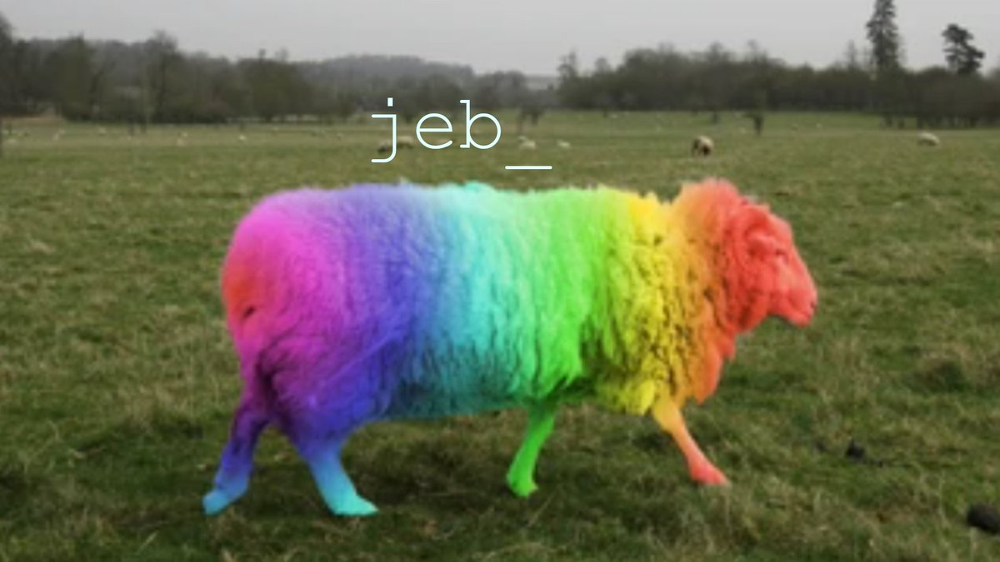

2009. gadā zviedru programmētājs un dizaineris Markuss Pērsons (Markus Persson) nolēma izveidot smilškastes spēli — tādu, kas ļauj brīvi un organiski izpētīt virtuālo pasauli, lai atvērtu savu jauno uzņēmumu Mojang AB. Pērsons sāka darbu pie tagadējā Minecraft tā paša gada 10. maijā, pakāpeniski grozot produktu līdz 16. maijam. Minecraft “alfa versija” publiski debitēja jau nākamajā dienā.

Pēc Minecraft izlaišanas personālajā datorā Mojang periodiski atjaunināja un uzlaboja spēli, līdz 2011. gada 18. novembrī piegādās to, ko uzņēmums uzskatīja par pilno versiju.
Kad Minecraft radītājs uzsāka izstrādes procesu, viņš šo projektu sauca par alu spēli. Nosaukums drīz tika mainīts uz Minecraft: Akmens ordenis un galu galā tikai Minecraft.
